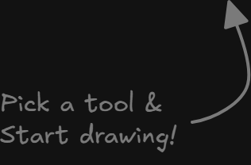

Canvas basics
The shared canvas is where the meeting actually happens. This chapter walks the toolbar tool by tool, shows the Canvas M extras tucked beside it, and explains how to place things, move the camera, and read the mini-map — all from a participant's seat.

- 1 Hand (H) — the panning tool. Hold and drag to slide the canvas without selecting or drawing anything.
- 2 Selection (V or 1) — pick, move, and resize elements. The default tool. If you have the lasso preference on, this slot becomes Lasso selection instead.
- 3 Drawing shapes: Rectangle (R/2), Diamond (D/3), Ellipse (O/4), Arrow (A/5), Line (L/6).
- 4 Draw (P or X, also 7) — freehand pen. Text (T/8). Insert image (9).
- 5 Eraser (E/0) and Revision cloud (Q) — the dashed markup cloud for flagging changes.
- 6 Canvas M extras strip: the Stickers and Stamps pickers, the Ask MCM Bot tool, and the CAD view / 3D view openers — added next to the shape switcher.
- 7 Laser pointer (K) — a temporary dot for pointing during a walkthrough; reach it from More tools rather than the main strip.
The toolbar at a glance
| Tool | Shortcut | What it does |
|---|---|---|
| Hand (panning tool) | H | Drag the canvas around without touching elements. |
| Selection | V or 1 | Click to pick; drag to marquee-select; drag a handle to resize. |
| Rectangle | R or 2 | Click-drag a rectangle. Hold to keep drawing more. |
| Diamond | D or 3 | Click-drag a diamond. |
| Ellipse | O or 4 | Click-drag a circle or oval. |
| Arrow | A or 5 | Click a start point, click an end point. Snaps to nearby shapes. |
| Line | L or 6 | Straight line; click again to add a bend, double-click to finish. |
| Draw | P, X or 7 | Freehand pen — just drag. |
| Text | T or 8 | Click to place a text cursor and type. Double-clicking with Selection also starts text. |
| Insert image | 9 | Pick an image file to drop on the canvas. |
| Eraser | E or 0 | Drag over strokes to remove them. |
| Revision cloud | Q | Draw a dashed cloud to mark up a change. |
| Laser pointer | K | A fading dot for pointing; lives under More tools. |
Number keys mirror the icons left to right (1–0). The same shortcuts work whether you are a host or a participant — the toolbar is identical for everyone with edit access.
The buttons beyond plain whiteboarding
Two pickers labelled Stickers and Stamps. Open one, and a grid of assets appears with the hint “Pick → scroll to resize → click to place.” An empty library reads “No Stickers in the library yet.”
The bot tool (Ask MCM Bot) drops a prompt box on the canvas. Type any request — “summarize the meeting, list decisions” — and the answer is written onto the canvas. It shows “🤖 Working…” while it thinks.
CAD view opens a DXF in a pane; 3D view opens an IFC model. If the library has none, the popover reads “No DXF files in the library yet.” / “No IFC models in the library yet.”
Reach for the extras when plain shapes aren't enough: stickers and stamps to react or approve, the bot to pull answers out of the transcript, and the CAD/3D openers to inspect drawings and models right on the board. They sit in one strip next to the shape switcher; on a narrow phone screen they collapse into a single row below the toolbar.
Drop a sticker, stamp, or bot answer
- Click Stickers or Stamps in the extras strip to open the picker.
- Click an asset. A translucent ghost now follows your pointer — you are in placing mode.
- Scroll the wheel (or pinch) to resize the ghost before you commit.
- Click once on the canvas to drop the asset at that point.
- For the bot, click Ask MCM Bot, click the canvas, then type your request in the floating box and press Send.
→ The sticker, stamp, or bot answer lands on the canvas as a normal element that everyone in the room sees — you can then select, move, or resize it like any shape.
Placing mode works the same with a mouse, an Apple Pencil, a Surface Pen, or a finger. With a pen, the ghost sits beside the tip rather than under your hand.
Zoom, reset, and the mini-map
- Find the navigation widget in the bottom-right corner of the canvas — it is always there.
- Click + (Zoom in) or − (Zoom out). The buttons grey out at the maximum and minimum zoom.
- Read the live zoom percentage in the middle; click it to Reset zoom (100%).
- Click the map icon to toggle the mini-map — its tooltip flips between Show navigation map and Hide navigation map.
- On the mini-map, click or drag to move the camera; the bright rectangle is your current view.
→ You can reach any corner of a large board without a scroll wheel or trackpad gestures — useful on a tablet. Your mini-map open/closed choice is remembered on this device.
Moving your own camera is local: it does not move anyone else's view, and following is separate — that is the participants panel's job, covered earlier.

One infinite board, shared live
The canvas is a single, endless sheet that everyone in the room shares in real time. There are no pages and no edges — you pan and zoom to wherever the work is, and what you draw appears for everyone the instant you draw it.
Two ideas keep it calm. First, your camera is yours: zooming or panning only moves your own view, never anyone else's, so you can wander off to inspect a detail without dragging the room with you. Second, your edits are everyone's: a shape, sticker, or bot answer you place is collaborative the moment it lands. The mini-map exists to reconcile the two — it shows the whole board at once so you never lose your bearings.
Your camera is yours; your edits are everyone's.
When a meeting has finished, the canvas switches to review mode and the editing extras step back — the Stickers, Stamps, and bot buttons disappear, while the CAD and 3D openers and the navigation widget stay so you can still inspect and move around.
Canvas snags and fixes
The zoom + or − button is greyed out. — You're already at the maximum or minimum zoom.
Click the percentage to reset to 100%, or use the other button. → 7.6
A sticker picker grid is empty. — No assets are bundled for that kind yet.
You'll see “No Stickers in the library yet” — use a stamp or a shape instead. → 7.4
CAD view / 3D view opens an empty popover. — No DXF or IFC files have been uploaded to the room.
Add a file via the library bar on the right first, then re-open the view. → 7.4
The Stickers, Stamps, and bot buttons vanished. — The meeting has finished — the canvas is read-only.
This is expected. You can still pan, zoom, and open CAD/3D views to review. → 7.7
The bot says it can't answer. — A connection or API problem.
You'll see “The bot hit an error, try again.” — wait a moment and resend. → 7.4
Most canvas controls are local-only, so a hiccup rarely affects the rest of the room — a quick retry or a zoom reset usually clears it.